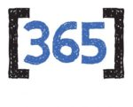

Aniversário de dois anos do Homelaber Brasil
BlogCompartilhe esse post nas redes sociais...
Olá Homelabers!
Ontem esse blog completou 2 anos de existência.
Foram dois longos anos, com altos e baixos, muito conteúdo bacana, muita ralação, alguns períodos de completo hiato, alguns períodos totalmente frenéticos, mas lá se foram 2 anos felizes.
Graças a esse blog, posso dizer que consegui conquistar novas amizades e porque não, um pouquinho de reconhecimento na comunidade. Consegui realizar alguns sonhos que imaginava ser impossíveis de serem alcançados.
Acredito eu, que tenha conseguido atingir o meu objetivo primário, que era criar conteúdo de qualidade e em Português sobre Virtualização.
* Esse blog me tornou um [VMware vExpert (2X)](http://homelaber.com.br/vmware-vexpert-classe-de-2017/).
* Esse blog me levou até Las Vegas, para acompanhar a VMworld 2016 , sendo o** único** [blog OFICIAL em Português](http://homelaber.com.br/homelaber-brasil-blog-oficial-da-vmworld-2016/) a cobrir o evento.
* Esse blog me proporcionou a oportunidade de [participar de um painel da VMworld](http://homelaber.com.br/vmworld-2016-apresentacao-vbrownbag-latam-vmug/) e gastar todo o meu PortuSpanEnglish (assista o vídeo)
* Esse blog me tornou um [VMUG Leader](http://homelaber.com.br/vmug-vmware-user-group-grupo-de-usuarios-vmware/) do [VMUG São Paulo](http://vmugsp.com.br)
* Esse blog me levou até a [semi-final](http://homelaber.com.br/vdm-2016-episodio-3-segunda-defesa/) do [Virtual Design Master](http://homelaber.com.br/virtual-design-master-2016/)
* Esse blog me levou ao [vFORUM 2016 como um expositor](http://homelaber.com.br/evento-resumo-vforum-brasil-2016-vmug-sao-paulo/)
* Esse blog me proporcionou [conhecer o Pat Gelsilger](https://twitter.com/homelaber/status/770840581077467136) (@PGelsinger), CEO da VMware
* Esse blog me fez uma pessoa melhor! E eu agradeço por isso! Foi um ano fantástico e estou muito feliz por isso!
[caption id=“attachment_2618” align=“aligncenter” width=“300”] Pat, meu chapa![/caption]
O crescimento do Homelaber nesses últimos dois anos, foi muito além do que eu esperava, mas ainda existe muito espaço para crescer!
Números dos últimos 12 meses:
Os posts mais acessados nos últimos 12 meses foram:
VMworld 2016 – Resumão da VMworld – Parte 1 – O que acontece em Vegas, NÃO fica em Vegas!
Homelaber Brasil: Blog oficial da VMworld 2016
10 ferramentas para monitoração de redes e servidores
Download do novo VMware vSphere 6.5
Como criar Pendrive com Boot do VMware EXSi utilizando a ferramenta Rufus
Grupos de Tecnologia no Telegram
Novo Homelab para 2017 – HPE ML 110 G9
Alpine Linux – Uma nova distro linux ligth que vale a pena conhecer
VMware vSphere 6.5 – Lançamento oficial
DuckDNS – Serviço de DNS Dinâmico Grátis
vExpert 2017 – Inscrições abertas
43 novos labs disponíveis no VMware Hands-On Labs (HOL)
Video: Veeam Endpoint Backup Free – Instalação, Backup, Restore e Desastre Recovery
Linux Dashboards – Ferramentas simples para monitorar o seu servidor Linux
Back-to-Basics: Diferenças entre tipos de disco em uma VM (Thin vs Thick Provision)
O twitter e a comunidade VMware
VMware ESXi FREE – Diferenças e Limitações
O que vem por ai?

Eu preciso me organizar um pouco melhor e voltar a escrever mais no blog. Gerar mais conteúdo técnico, mais laboratórios, mais testes de produtos, mais coisas do meu dia-a-dia, enfim, a fila de posts está enorme, o que falta é tempo!
Minha meta para os próximos 12 meses é produzir + 150 posts, reativar o canal do Homelaber no Youtube (já passamos de 100 seguidores) e fazer a página do Facebook crescer (já temos mais de 1000 seguidores) e dar o pontapé inicial no Podcast, enfim… um desafio ENORME pela frente.
Gostaria muito de receber o feedback de vocês sobre o que vocês querem ver aqui no Homelaber, quais assuntos, tecnologias, produtos, etc que devo abordar, para ser mais acertivo na produção do conteúdo.
Deixo aqui o meu muito obrigado a todos vocês que acompanham o blog, que mandam e-mails, que deixam comentários, que me procuram no WhatsApp, no Telegram, etc.
Obrigado!
VC
Compartilhe esse post nas redes sociais...Valdecir Carvalho
Nerd e pai orgulhoso da Mariana e João. Profissional Sênior de TI com foco em arquitetura de infraestrutura e cloud computing. Blogueiro, podcaster, palestrante, amante de comunidades técnicas, fotógrafo aposentado e adora jogos antigos.
#vExpert · #VMUGLeader · #VUGBrasil · #vBronwBagBrasil · #VeeamVanguard